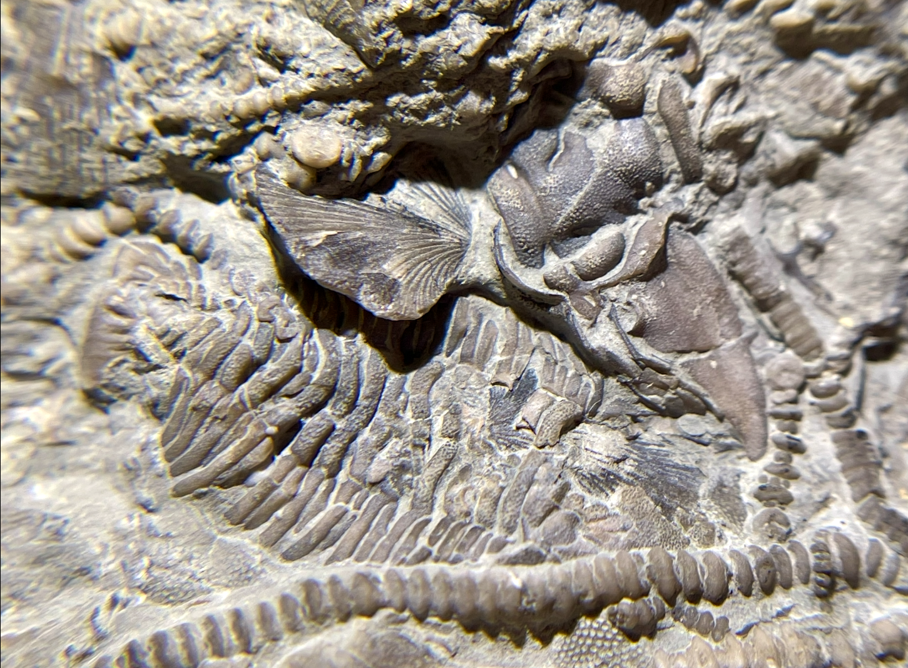

HOME
Ophiuroid+
1. (Ophiuroid) indet.
2. (Crinoid) Ectenocrinus simplex
3. (Crinoid) Cincinnaticrinus varibrachialus
4. (Trilobite) Flexicalymene granulosa
• Ordovician
• Kope Formation
• Cincinnati, Ohio, USA
Size: 2.5 cm across the arms for the Ophiuroid

Copyright © 2024 by Samuel Kim, all rights reserved